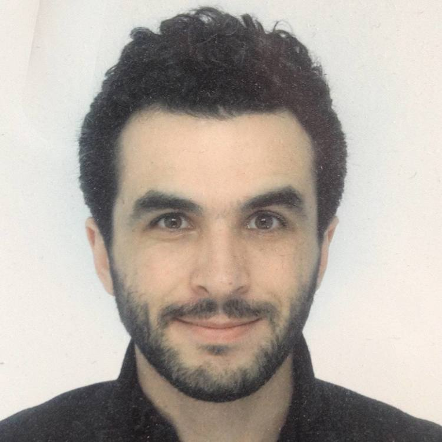
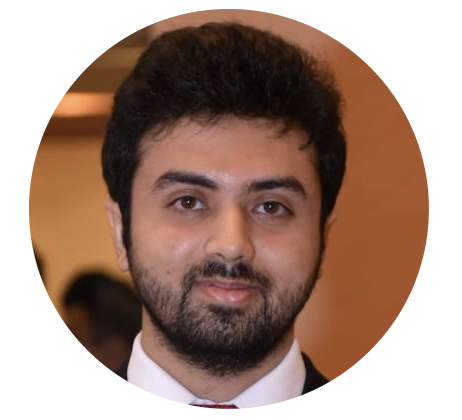
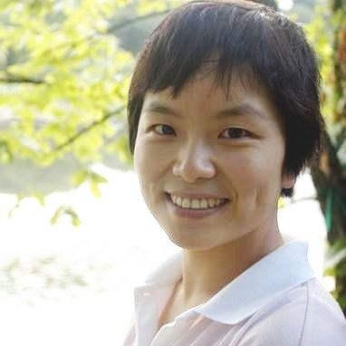
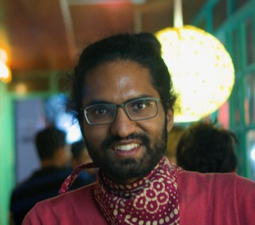
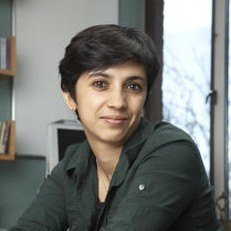
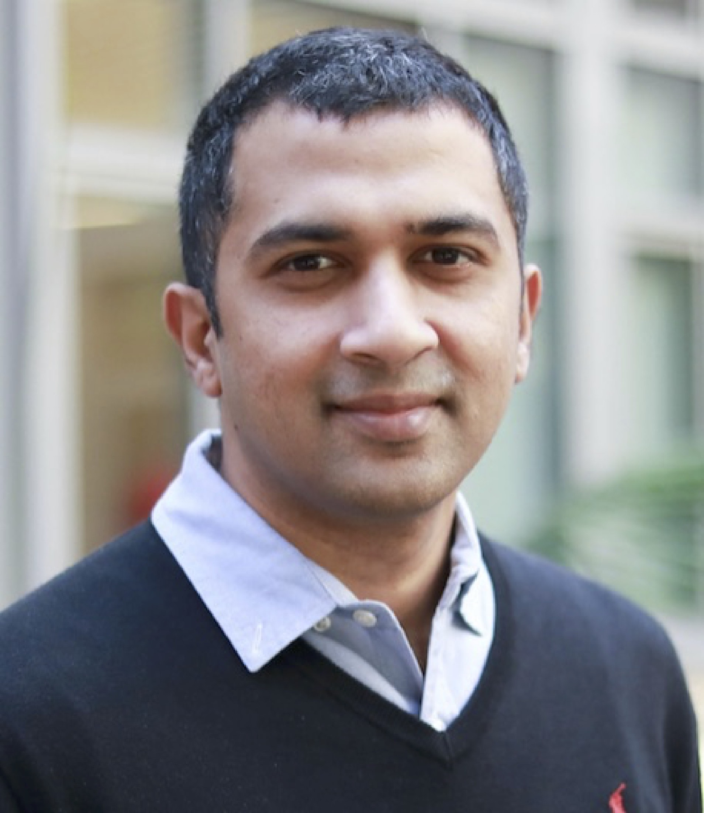

Lead

Lakshmi Subramanian
Professor at NYU Computer Science, faculty at NYU School of Medicine and NYU Stern School of Business
Members (current)
Ankit Bhardwaj
Ph.D. Student at NYU Computer Science
Ramakrishnan. K
Ph.D. Student at NYU Computer Science

Samuel Fraiberger
Visiting Researcher at NYU Computer Science,
Data Scientist at the World Bank
Affiliated Members

Rohail Asim
PhD Student at the ComNets Lab in NYU Abu Dhabi, advised by Prof. Yasir Zaki
Collaborators (current and past)
Alex Beutel
Senior Staff Research Scientist at Google

Anant Sudarshan
South Asia Director of EPIC,
Senior Research Associate in the Dept of Economics at University of Chicago
Anirudh Sivaraman
Assistant Professor at NYU Computer Science
Beth Simone Noveck
Professor and Director, The Governance Lab, Northeastern University

Helen Nissenbaum
Professor of Information Science at Cornell Tech

Jinyang Li
Professor at NYU Computer Science

Jay Chen
Senior Researcher and Principal Investigator at ICSI Berkeley
Maximilian Nickel
Research Scientist Facebook AI Research

Rajesh Ranganath
Assistant Professor, Computer Science Department, New York University

Rohini Pande
Professor of Economics at Yale University

Rumi Chunara
Assistant Professor at NYU Computer Science & Engineering
Shameer Khader
Senior Director at AstraZeneca

Srikanth Jagabathula
Associate Professor at
NYU Stern School of Business

Sriram Sankararaman
Associate Professor, Computer Science Department, University of California, Los Angeles

Sunandan Chakraborty
Assistant Professor of Data Science at
School of Informatics and Computing at
Indiana University IUPUI

Thomas Wies
Associate Professor at NYU Computer Science

Umar Saif
Chairman of Punjab IT Board,
Associate Professor of Computer Science at LUMS

Yasir Zaki
Assistant Professor of Computer Science at NYU Abu Dhabi

Yaw Nyarko
Professor of Economics at NYU

Yiye Zhang
Assistant Professor, Weill Cornell Medicine, Cornell University
Alumni
Postdocs & Research Scientists
Muhammad Khan (2022)
Assistant Professor, Univ of Birmingham, UK
(Post-Doc under Prof. Yasir Zaki, NYU Abu Dhabi)
Moumena Chaqfeh (2022)
Assistant lecturer of CS, NYU Abu Dhabi (Sept 2021 - present)
(Post-Doc under Prof. Yasir Zaki, NYU Abu Dhabi)
Yan Shvartzshnaider (2020)
Assistant Professor of Computer Science at York University (Aug 2020 - present)
Fatima Zarinni (2018)
Working with Google networking team
Yasir Zaki (2015)
Assistant Professor of Computer Science at NYU Abu Dhabi
Shankar Kalyanaraman (2014)
Data Scientist at Facebook
Esther Ezra (2011)
Assistant Professor in the School of Mathematics at Georgia Tech
Senior Lecturer in the Dept of Computer Science at Bar-Ilan University
Vincent Toubiana (co-advised by Helen Nissenbaum) (2011)
DPA France
PhDs
Mukund Sudarshan (Advised by Rajesh Ranganath and Oded Regev)(2022)
Ananth Balashankar (2022)
Research Scientist at Google, Greater New York area (Jun 2022 - present)
Shiva R. Iyer (2022)
Research Scientist at Intel, SF Bay Area (May 2022 - present)
Talal Ahmad (2019)
Software Engineer at Google, Greater New York area (Sep 2019 - present)
Ashwin Venkataraman (co-advised by Srikanth Jagabathula) (2018)
Post-doc at Harvard Business School (Aug 2018 - Jul 2019)
Assistant Professor of Operations Management at UT Dallas (Jul 2019 - present)
Aditya Dhananjay (Advised by Jinyang Li and Sundeep Rangan)(2016)
Co-founder and President of Millilabs (Jun 2016 - present)
Sunandan Chakraborty (2015)
Moore-Sloan Post-Doc at NYU Center for Data Science (Aug 2015 - Aug 2017)
Assistant Professor of Data Science at IUPUI (Aug 2017 - present)
Michael Paik (2013)
Visiting Assistant Professor, Dept of Computer Science, NYU Abu Dhabi (Aug 2013 - Sep 2014)
Director of Documentation, MongoDB Inc. (July 2014 - present)
Ashlesh Sharma (2013)
Co-Founder and CTO at Entrupy Inc.
Matt Tierney (2013)
Staff Software Engineer at Google, Greater Boston Area
Nguyen Tran (co-advised by Jinyang Li) (2012)
Staff Software Engineer at Google, Bay Area (Aug 2012 - present)
Sherman Chow (co-advised by Yevgeniy Dodis and Victor Shoup) (2012)
Associate Professor of Information Engineering at CUHK (Nov 2012 - present)
Nektarios Paisios (2012)
Staff Software Engineer at Google
Jay Chen (2011)
Assistant Professor of Computer Science at NYU Abu Dhabi
Principal Investigator at ICSI Berkeley (July 2020 - present)
Masters
Manuel Tonneau (2022)
PhD student at the Oxford Internet Institute
Sriram Ramesh (2022)
Sudharsana Kannappan Jaya Lakshmi (2022)
Intern at Amazon
Vikas Patidar (2021)
Software Engineer at Google, SF Bay Area
Ulzee An (2019)
Ph.D. student at University of California, Los Angeles
Kate Boxer (2017)
Ph.D. student, Dept of Computer Science, New York University
Sam Royston (2016)
Varun Chandrasekaran (2016)
Ph.D. student at University of Wisconsin-Madison
Christopher Rohlfs (2015)
Morgan Stanley and Ph.D. student at Columbia University
Ruchi Tandon (2015)
Google, NYC
Renfei Zou (2015)
IBM Watson
Rachid Ennaji (2012)
NVIDIA
Trishank Karthik Kuppusamy (2011)
Ph.D. student at NYU Tandon
Brendan Linn (2011)
Google
Sindhura Chava (2011)
Barclays Capital
Lu Wei-Chih (2011)
Meredith J. Hasson (2010)
Pivotal Labs
Ariel Nevarez (2010)
American Museum of Natural History
Nahanaeli Schelling (2010)
Original Artists
Faiz Kazi (2009)
A9
Undergrads
Rishabh Ranawat (2008)
Technology Analyst at Goldman Sachs